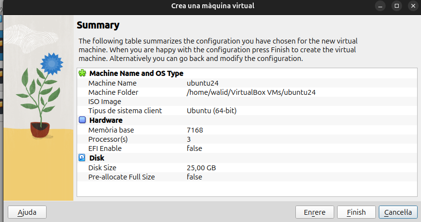
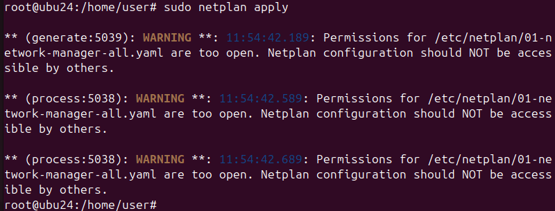
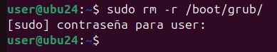

Instal·lacio SO Ubuntu 24
Primer de tot, configurem la màquina virtual.
En aquest cas, s'ha utilitzat les següents especificacions.

Per poder posar la xarxa NAT, primer creem una xarxa.

I creem una xarxa amb un nom.

Escollim instal·lació manual.

Posem les diferents particions que necessitem.
En aquest cas s'ha triat 5 GB de swap, ja que podria ser que la màquina es quedés sense memòria.
10 GB de home, ja que hi ha diferents usuaris que utilitzaran aquest ordinador i tota la informació que tenen es guardarà allí.
Finalment, 10 GB d'arrel, ja que sol contindrà les aplicacions necessàries dels usuaris.

Finalment, tindrem les següents especificacions de màquina quant a SO.

Configuracio Xarxa
Primer de tot, posem la configuració manual des de paràmetres.

I comprovem que funciona.


Per poder canviar la IP de forma manual des dels arxius de configuració de linux,
anem a /etc/netplan/ i modifiquem el arxiu 01-network.

Per poder aplicar els canvis, escrivim la comanda netplan apply.

I comprovem que tenim la nova IP i connexió a internet.


Punts de restauracio
TimeShift
Primer instal·lem TimeShift amb apt.

Entrem i creem una snapshot.

Podrem comprovar que se'ns ha creat una instantània amb el dia i hora de creació.
Instal·lem GParted per comprovar la restauració.

Per restaurar, escollim el snapshot i cliquem a restaurar.

Ens mostrarà els arxius que es modificaran, crearan o s'eliminaran.

Després, es reiniciarà l'ordinador.
Finalment, podem veure que gparted no esta.

BTRFS
És un sistema de volums els quals es poden fer snapshots de solament carpetes que existeixen dintre dels volums.
Gestor d'arrancada
GPT i MBR
GPT i MBR són dos sistemes de particionatge de discs.
GPT i MBR s'inicien al principi tant per a carregar el SO com per a saber on comencen i acaben les particions del disc.
MBR
Master Boot Record es el sistema de particionatge mes antic dels dos.
Està utilitzat per sistemes antics, sistemes amb BIOS i Windows.
Està situat al principi del disc i conté:
- Bootloader: programa petit per a iniciar el SO.
- Taula de particions: mapa on es guarda les direccions de les particions.
Les principals característiques són:
- Sol pot tindre 4 particions primàries.
- Una de les particions primàries ha de ser activa i per tant contindre el SO.
- Una de les particions pot ser extesa i contindre mes particions dintre.
- Màxim de 2TB per a cada partició.

GPT
GUID Partition Table es un estandar de particions, i el mes nou dels dos.
Està utilitzat per sistemes més nous amb UEFI i sistemes 64 bits, tmabé l'utilitza linux.
Conté:
- MBR protectiu: per a que els sistemes mes antics no pensis que el disc està sense particionar i arrencar el SO.
- Header: Es guarda l'informació de les particions i de recuparació.
- Entrada de cada partició.
Les principals característiques són:
- 128 particions.
- Màxim de 256TB per partició.
- La taula de particions es clona a una altra part del disc.

Instal·lació DUAL
Sempre que es fa una instal·lació dual s'instal·la primer el sistema més antic i després el més nou.
Si es una arrancada dual de Windows i Linux, primer s'instal·la Windows i després Linux per a poder tenir al compatibilitat.
Si un dels dos sistemes no arranca. El més segur es que el sistema nou ha borrat el gestor d'arrancada del primer, s'haurà de recuperar el gestor.
GRUB
GRand Unified Bootloader, es un dels gestors d'arrancada més populars per a Linux.
Serveix per a arrancar el SO des del MBR del disc.
GRUB funciona en tres etapes:
- La primera etapa es troba al MBR i apunta a la resta del GRUB per a poder carregar de forma correcta el sistema de fitxers i SO.
- La segona etapa es més complex i s'encarrega de mostrar un menú amb els SO disponibles (si hi ha un passa directament a la següent etapa) i iniciar el sistema de fitxers.
- L'última etapa, s'encarrega d'arrencar el SO, en cas de linux, inicia el kernel i el initrd.
Restaurar GRUB
Primer de tot, esborrem la carpeta de GRUB.

Si reiniciem la màquina, podem veure que no troba el bootloader
BootRepair
Introduïm l'ISO de bootrepair i iniciem de nou la màquina. Al principi, revisarà l'estat de la màquina.

Després d'una comprovació, podrem iniciar la reparació automàtica o que ens mostri l'informació sobre l'error.

Si escollim reparació automàtica, ens donarà l'opció de pujar i visualitzar l'informe de l'error i com s'ha arreglat.
Després d'uns quants minuts, s'ha arreglat el grub. També ens mostrarà el link per visualitzar l'informe.
En aquest cas, l'informe ens mostra que ha reinstal·lat el grub.

Finalment, podrem tornar a iniciar el SO.
Super GRUB2
Introduïm l'ISO de súper GRUB2 i iniciem la màquina. Escollim l'opció d'arrancar manualment.

Seguidament, escollim que ens mostri els SO instal·lats.

I escollim Linux. En aquest cas sol està aquest SO.

Entrem a la terminal i instal·lam GRUB.

Finalment, actualitzem GRUB per a crear el seu fitxer de configuració i trobar els SO instal·lats.

Des/Instalacio Aplicacions
 Aquesta pàgina web està sotmesa a la llicència Creative Commons.
Saber Més
Aquesta pàgina web està sotmesa a la llicència Creative Commons.
Saber Més